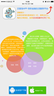
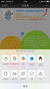

汉富宝
汉富宝：刷卡支付+互联网便民+金融理财
2.后会出现：安卓下载与苹果下载的界面
 
3.此时需要点击右上角“三个点”，用浏览器打开，点击下载。
4.安装成功后，用手机号注册登入“汉富宝”，在“用户设置”中进行实名认证和绑定银行卡.（绑定银行卡必须是储蓄卡，必须与实名认证身份证一致，用于结算，否则资金无法结算）
5.绑定设备方法，在“用户设置”里打开“设备列表”，并插上汉富宝设备进行绑定，出现刷卡器编号则绑定成功
6.注意：部分安卓手机无法连接设备的解决办法
（1）打开手机设置选择---其他高级设置----耳机和音效----调成通用耳塞式。
（2）打开手机自带的安全中心选择-----授权管理----应用权限管理----权限管理----录音---允许汉富宝录音。（以小米手机为例，其他安卓的可以效仿）
（3）部分手机因屏幕过小，注册不成功的，可以在其他的手机注册，再换设备登入。
（4）用户如出现密码错误，需解冻的，可以拨到客服电话4008602786告知手机号码，即可解冻。
7.测试期间汉富宝只开通了“查余额”和“安全收款”的功能。
之后陆续会推出P2P投资理财。信用卡转账还款服务，生活缴费话费充值等便民服务。
8.刷卡流程：
点击“安全收款”，输入需要的收款金额，进行收款之后系统会监测设备，设备连接成功后，进行刷卡（芯片卡从下方插入，磁条直接刷）
刷完卡后，会上传签名，然后让你自由选择费率，分别为：045% 0.9% 1.25% 30封顶 80封顶
根据需要可自由选择，如是小额费率可选择0.45的成本低，刷1000元的只需付4.5元（1000乘以0.0045=4.5元），部分有积分。
一般类0.9%和餐饮类的1.25%的基本都是带积分的，部分银行不给予积分.
余额会在T+1个工作日内自动到达你所绑定的银行卡内（T+1即隔天到账，节假日顺延，）T+0，10分钟到2小时内到账，收取千2手续费
D+0，10分钟到2小时内到账，收取千2手续费
注意：汉富宝与银联结算的时间为：23:00----23:00，各位在23点前金额会在第二个工作日到账，23点后刷卡会默认进入下一个工作日到账。
目前费率仅针对现在绑定内测的用户，近期公测后可能回有小幅度的调整。